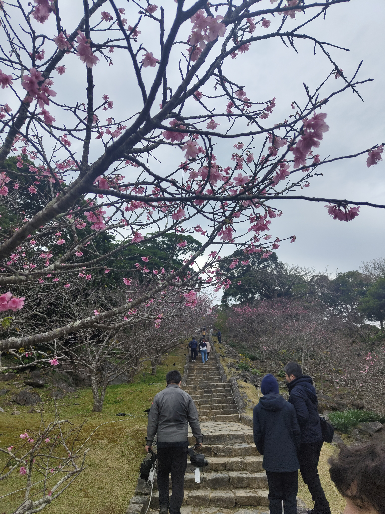
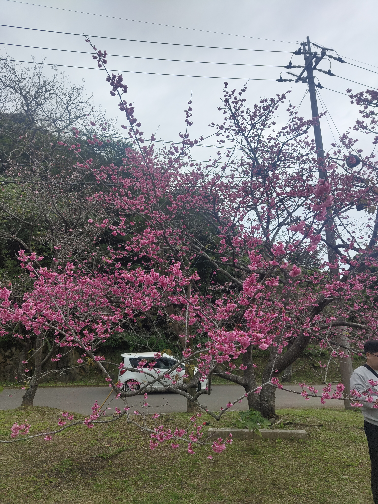
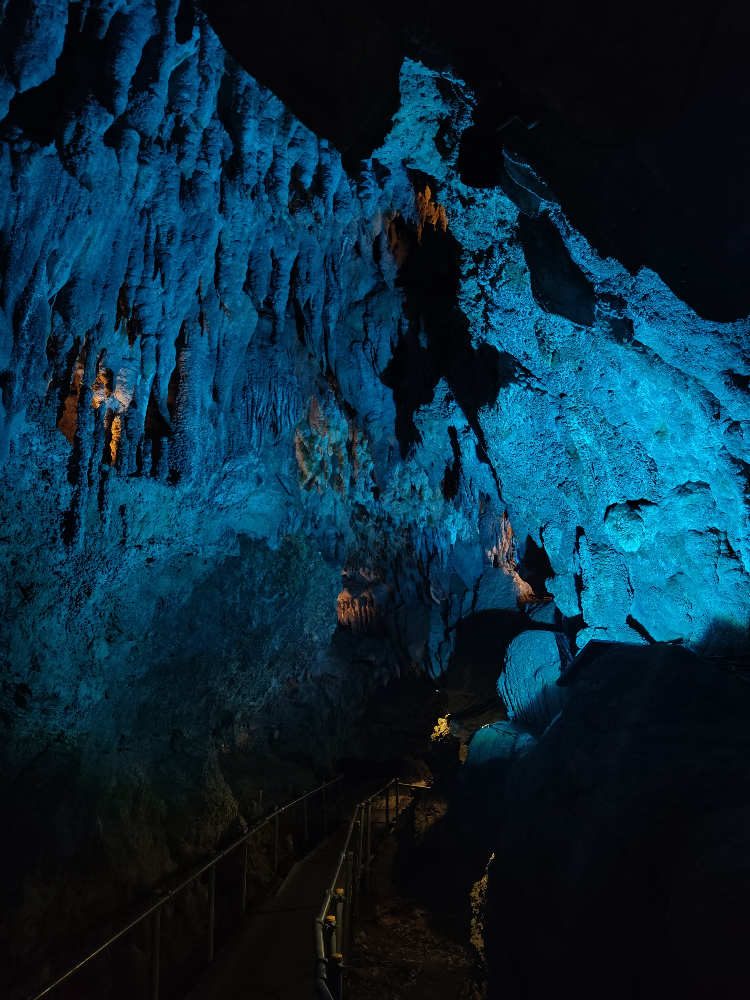
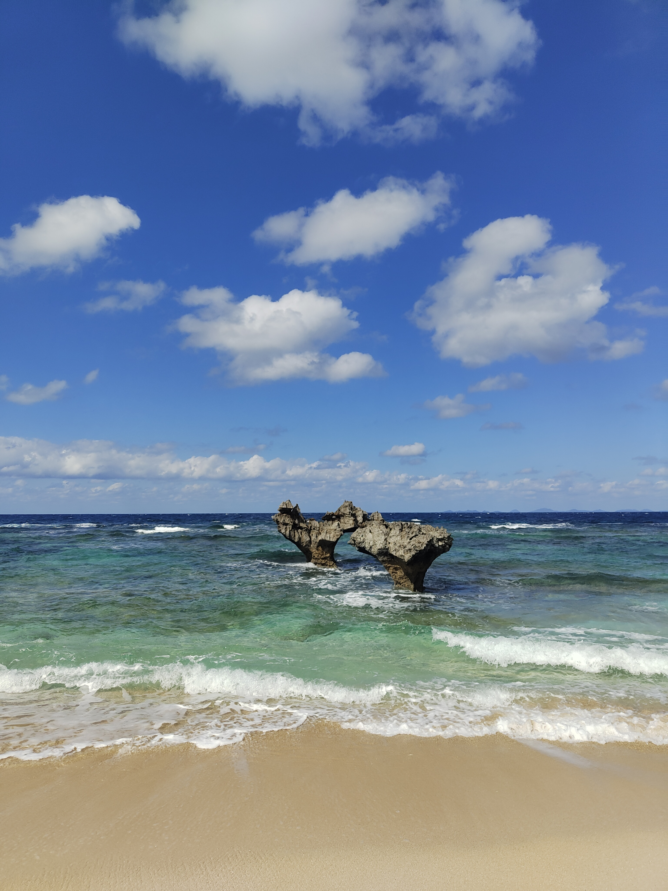
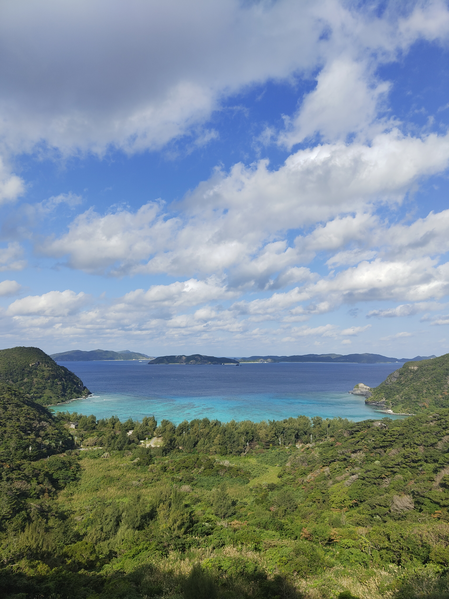
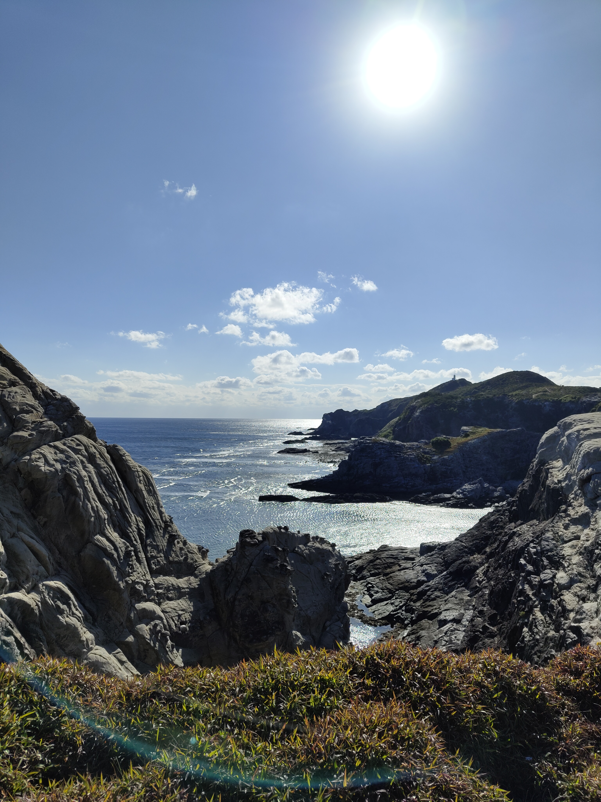
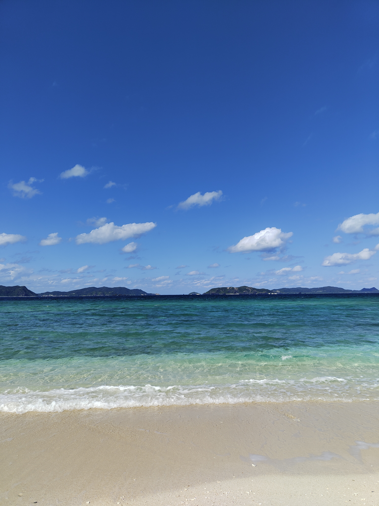
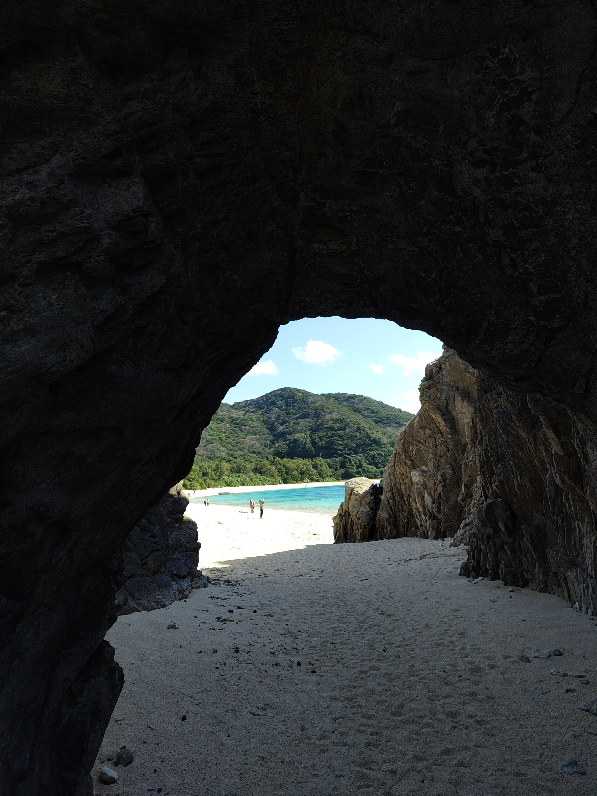
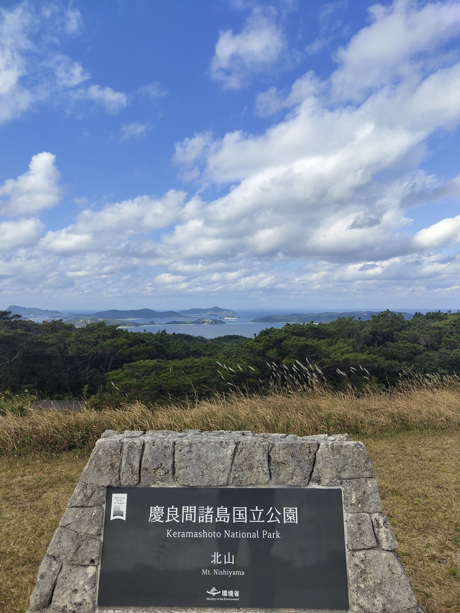

Okinawa
Naha · Motobu · Kouri Island · Kijoka · Tokashiki
🌺 Travel
Tropical Paradise
Five days on Japan's southern island
Naha — Snake Sake and Shuri Castle
Okinawa announces itself differently from the rest of Japan. The air is warmer, the pace is slower, the food is different, and the culture carries traces of the Ryukyu Kingdom that ruled these islands independently for centuries before Japanese annexation in 1879. Naha, the capital, wears all of this lightly — the charming streets of Kokusai-dori full of shops selling things you won’t find on the mainland, the architecture lower and more open, the whole city feeling subtropical in a way that takes some adjustment after a winter on Honshu.
Shuri Castle is the centrepiece — the restored seat of the Ryukyu kings, rebuilt after wartime destruction, sitting on the hill above the city in vivid red lacquerwork. It burned down again in 2019 and restoration is ongoing, but the grounds and surrounding structures are still worth the visit and the context they provide is essential for understanding what Okinawa is and where it comes from.
Snake sake — habushu — is the local speciality: awamori rice spirit with a habu pit viper aged inside the bottle. It tastes stronger than it looks and the pouring of it is a performance worth watching.
Snake sake being poured — habu pit viper inside the bottle, stronger than it looks.
The North — Whales, Blossoms, and the Aquarium
The north of the main island is where Okinawa opens up. The drive up the west coast passes Cape Manzamo — the coral cliff above the ocean — and continues through to Motobu, where the whale watching tours depart in winter. Humpback whales migrate through Okinawan waters between January and March, and the tours find them reliably. Watching a humpback surface is one of those moments that photographs and videos gesture at but don’t fully capture — the scale of it, the proximity, the sound.
Mount Yaedake in January is covered in cherry blossoms — Okinawa’s cherry season runs weeks earlier than the mainland because the variety here blooms in the cold. The blossoms on the ancient castle steps are the particular image. Churaumi Aquarium, nearby, houses one of the largest tanks in the world and the whale shark inside it is genuinely mesmerising — the scale of the fish and the scale of the tank together producing something that takes time to process.
Cave Okinawa is a small but beautifully illuminated limestone cave worth the stop on the way.


Whale watching off Motobu — the humpbacks surfacing, the scale of it arriving all at once.

Kouri Island and Kijioka — Heart Rock and Waterfalls
The drive to Kouri Island crosses a two-kilometre bridge over open ocean, and the approach — the water on both sides turning from deep blue to turquoise as you get closer — is one of the better drives in Okinawa. The island is small enough to do a full lap without rushing. Heart Rock is two naturally formed coral boulders on the beach that look exactly like a heart from the right angle, framed by crystal blue water and open sky.
The Nakijin Castle ruins on the way back are another Ryukyu Kingdom site — the stone walls intact, the views over the coast from the ramparts excellent. Ostrich Land, where the ostriches eat directly from your hand with considerably more aggression than expected, rounds out the afternoon.
The Seven Falls of Kijoka are a series of small waterfalls connected by a jungle trail in the north — lush, cool, and a complete contrast to the coast. The trail is short and the falls are worth every minute of it.

Heart Rock at Kouri Island — crystal water, clear sky, two coral boulders doing exactly what the name suggests.
The Seven Falls of Kijoka — jungle, cool air, water coming down through the green.
Tokashiki — The Keramas
The ferry to Tokashiki Island in the Kerama Islands takes thirty-five minutes from Naha and arrives somewhere that feels entirely removed from the main island. Tokashiki is small, quiet, and extraordinarily beautiful — the observation decks from the cliffs look out over islands fading into the distance, the water between them a colour that makes every previous description of turquoise feel inadequate. The beaches are among the best in Japan, which is not a small thing to say.
The island also carries history that deserves acknowledgement: during the Battle of Okinawa in 1945, many of the island’s civilians died in what are now called the Kerama Islands mass suicides — a tragedy the island commemorates quietly and that any visit should take time to understand.
The cats are everywhere, entirely untroubled, and deeply at home.





The beach at sunset — crystal clear water, the light going, nothing else needed.
“Among the best beaches in Japan — which is not a small thing to say.”
Five days is not enough for Okinawa. The main island alone has more than a week in it, and the outer islands — Tokashiki, Zamami, Ishigaki, Iriomote — each deserve their own trip. What Okinawa offers that nowhere else in Japan quite manages is the combination: the history of the Ryukyu Kingdom, the tragedy of the war, the tropical coast, the distinct food and culture, and the particular quality of light and water that the Pacific produces this far south.
Go in January for the cherry blossoms and the whales. Go whenever you can for everything else.
The Keramas — the outer islands of Okinawa, and the reason to keep coming back.